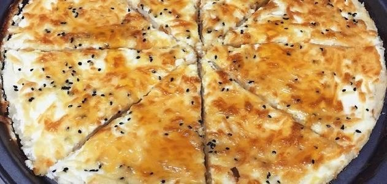

المعجنات
عش البلبل
المكونات : 2 كوب دقيق ملح 1 كوب ماء خميره بيكنج باودر حليب بودره 1/4 كوب زيت مكونات الحشوه : 1 علبة قشطة 500 غرام لبنه اولكرجبنه كريمي المراعي او بوك جبنة
طريقة التحضير : فردي العجينة في الصينيه .. بعدين تجهزي الخلطة وهي: علبه قشطة اي نوع التاج والا المراعي والا اللي عندك+علبه لبنه وسط+شوي سكر نص فنجال تقريبا .. بعدين صبيها على العجينة اللي فردتيها في الصينية.. وتاخذي جبنة موزريلا مبشوره وترشيها عليها حاولي تغطيها بالكامل..( (افضل شئ جبنة فرسانا موزريلا لأنها تذوب وتصير زي اللي من برا)) وبعدين دخليها الفرن وحمريها من تحت ..ومن فوق تحمير بسيط.. وبعد ما تطلعينها رشي عليها عسل او تقدري تحطي شيرة